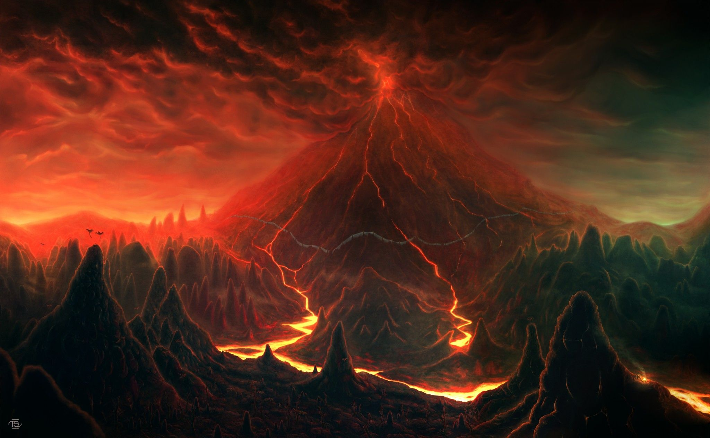
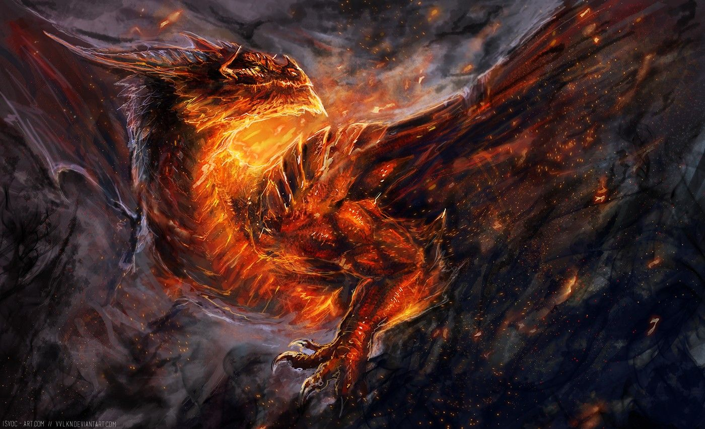

🌋 Бесплодные земли
Вотчина древних драконов


Тип территории: Вулканические пустоши
Уровень угрозы: Абсолютный
Обитатели: Древние драконы
Описание
Это истинно бесплодные земли, где сам воздух пронизан ядовитой серой, а невыносимый жар способен расплавить всё, чего коснется нога чужака. Здесь нет жизни в привычном понимании — только выжженная земля, потоки магмы и пепел.
Обитатели
Это территория вулканов, внутри которых обитают могучие древние существа — драконы. Они являются истинными хозяевами этих мест, и их присутствие делает земли смертельно опасными для любого, кто осмелится нарушить их покой.
Пути и Опасности
Неподготовленному путнику здесь очень сложно находиться. Известно лишь несколько тайных троп, по которым можно передвигаться относительно безопасно. Однако даже если вам удастся найти такую тропу и не сгореть заживо, это не гарантирует выживания. Ведь драконам тоже нужна еда, и забредший путник — легкая добыча для этих древних хищников.
Что нужно знать
- Серный воздух: отравляет легкие, требует защитных амулетов или заклинаний.
- Жар: плавит обувь и доспехи, передвигаться можно только короткими перебежками.
- Драконы: обладают острым слухом и зрением, охотятся на всё, что движется.
- Тропы: существуют, но их карты теряются вместе с теми, кто пытался их составить.